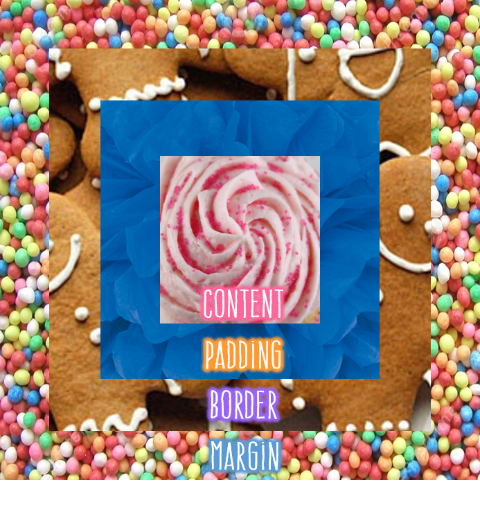

After getting seriously distracted looking up examples of CSS design, I've come up with a wishlist of features I want to add:
This week we’re learning about the relationship between HTML, CSS and the Document Object Model (“the DOM”). We’ve been asked to think of an analogy to describe these concepts. I like the (admittedly loose) analogy of making coffee:
I guess in this analogy the web developer would be the barista... You get the idea.
“Boxifying” involves visualising the layout of a webpage as a series of different shaped boxes. You start by breaking down the page into big boxes for the general layout, then go smaller and smaller for the more detailed pieces of design. Designing with boxes has the advantage that if you want to move things around at a later date, the parts will fit together more easily than if everything item had a unique footprint. I think of it like moving furniture around a room. It’s easier to change the layout if the walls are straight instead of curved, and the furniture has flat edges instead of pointy bits.
The elements of a website can be broken down further. At the heart of each box is content, which is nestled in padding and surrounded by a border. At the very outside of the box is the margin. This is the “box model”, depicted below. Resizing a certain aspect of the box can change the total footprint of the element.
